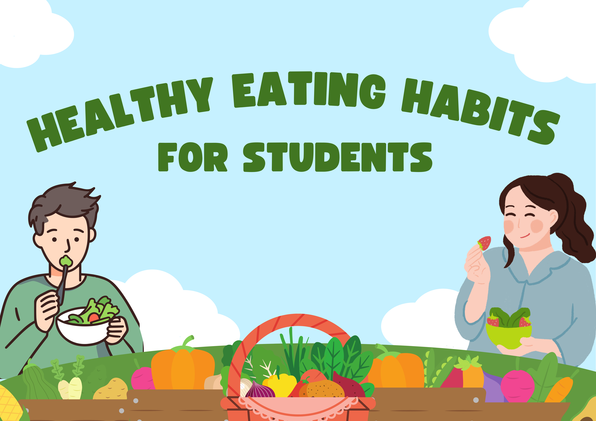

Introducción
En esta unidad vamos a aprender cómo llevar una alimentación saludable mientras mejoramos nuestro inglés de una forma divertida y práctica. A lo largo de las sesiones veremos vídeos, jugaremos, haremos actividades interactivas y trabajaremos en equipo para descubrir qué alimentos nos ayudan a sentirnos bien y cómo hablar de ellos en inglés.
Durante estas semanas aprenderás nuevo vocabulario, expresiones útiles y formas sencillas de comunicarte sobre comidas, hábitos y rutinas. Todo lo que practiquemos te servirá para crear dos productos finales, donde podrás demostrar lo que sabes de una manera creativa:
🟢 1. Una infografía interactiva
Harás una infografía sobre alimentación saludable usando herramientas digitales como Genially, Canva o PowerPoint interactivo. Tendrá que incluir al menos un elemento interactivo, como un botón, una ventana emergente o un enlace.
🔵 2. Un producto digital a tu elección
Podrás elegir entre:
- Podcast
- Vídeo
- Breakout educativo
En este trabajo explicarás, en inglés, ideas importantes sobre cómo comer de forma saludable. Podrás hacerlo en pareja o en pequeño grupo, según lo que decidamos en clase.
Para ayudarte, tendrás ejemplos, materiales de apoyo y actividades que te permitirán avanzar paso a paso. Además, podrás ver en este recurso las rúbricas de evaluación, que te mostrarán claramente qué se espera de tu trabajo y cómo puedes mejorar.
El objetivo es que aprendas inglés mientras descubres cómo cuidarte mejor, y que lo hagas de una forma creativa, accesible y divertida.
